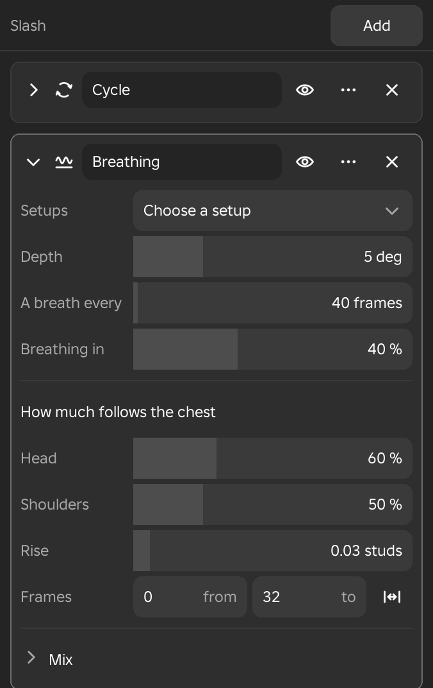

Modifiers
The Modifiers window lists the results of the tools you have run on the open animation, so that you can change a result later, turn it off, reorder it, apply it or delete it.
Modifiers Window
- Menu
- View ‣ Windows ‣ Modifiers
- Right-click
- A limb that a result has changed
- Shortcut
- F9 opens the values of the last result
- Workspace
- All
Most tools write ordinary keys, and those keys play and save as they always do. A tool whose result is kept in the Modifiers window also remembers how it made them, which means the tool, the values it used and the keys it started from. That is what lets you open the result later, change a value and have the keys made again, turn the result off to see the animation without it, put results in a different order, or take one out.
The window has a bar at the top with the animation's name on the left and an Add button on the right. Under the bar is one card for each result, in the order the results were made. With nothing made yet, the window says so and offers Add. The window follows undo and redo, and its results are saved with the animation, so they are there again the next time you open it.
Clicking the name of the Modifiers row on the timeline opens the window. Right-clicking a limb that a result has changed adds a submenu of those results to the limb's menu, and choosing one opens it in the window with its values showing.

See Also
Working with Tools explains how tools run. Curve Modifiers change a limb's curve directly and are not listed in this window.
Add
- Workspace
- All
The Add button in the window's top bar, and in its empty state, lists the tools whose results are kept. The tools are in groups named Generate, Physics, Clean up and Posing, then Timing, and then any group that a script has added. Choosing a tool runs it at once with the values it used last, exactly as choosing it from its menu does, and its values open in the Adjust panel.
A tool that needs something first says what in the status line. The Pose tool, for instance, needs a pose saved in the Poses window. With no animation open, Add says to open one.
Example
For example, with a walk open, choose a smoothing tool from Add to smooth the shaky arm keys, then open its card and lower the Strength in its Mix to find how much smoothing the arms need.
Tools That Make a Result
- Menu
- Pose ‣ Generate
- Pose ‣ Physics
- Pose ‣ Constraints
- Key ‣ Clean up
- Workspace
- Animate
Each result is named after the tool that made it. The tools whose results are kept are these.
- The Generate group holds Locomotion cycle, Cycle from poses, Add breathing, Pose from video, Anticipation and overshoot and Procedural motion.
- The Physics group holds Ballistic trajectory, Follow-through, Overlap, Foot lock, Fix foot sliding, Fix spin, and the simulation of the Physics window once it has been baked to keys.
- The Clean up group holds Butterworth smooth and Gaussian smooth, Peak removal, Euler filter, Unbake at contacts, Mocap cleanup, Cleanup stack and Reduce keys.
- The Posing group holds Mirror pose, Reshape keys, a pose from the Poses window, the constraints, Driver and Pose controller.
- The Timing group holds Offset limbs and Make cyclic.
Fixes made from the Check animation window appear here as well, and so do any tools that a script has added.
Notes
A tool that opens a dialog and changes only the run you made, such as Repeat, Bake keys or Find foot contacts, is not kept here. Its result is ordinary keys, and the Adjust panel can change it only until you do something else to the animation.
Result Cards
- Right-click
- A card's heading row
- Workspace
- All
Each result is a card. Its heading row holds the controls for the result, and its values are hidden until you open the card. A card that is selected has a lighter border. Opening a card shows the Presets row, the tool's own values and the Mix section, laid out as in the Adjust panel.
Options
- Arrow
- Opens or closes the card's values.
- Tool icon
- Clicking it selects the result, which also selects its bar on the timeline. Double-clicking it moves the playhead to the frame where the result starts. The icon dims while the result is off.
- Name
- Click the name to rename the result in place. Enter or a click elsewhere applies the name, and Esc leaves it as it was. An empty name puts the tool's own name back.
- Eye
- Turns the result off or on. See Turn Off and On.
- More
- Opens the card's menu with Adjust, Rename, Duplicate, a command to save the current values as a preset, Move up, Move down and Apply. Right-clicking anywhere on the heading row opens the same menu.
- Close
- Deletes the result. Ctrl+Z brings it back.
Changing a Result
- Shortcut
- F9
- Workspace
- All
To change a result, open its card and change a value, choose Adjust from its menu to show its values in the Adjust panel, double-click its bar on the timeline, or press F9 with the result selected. Every change runs the tool again from the keys it started from. One drag of a value is one undo step.
The keys you set by hand inside the frames the tool works on are kept. Framez remembers each of them as an offset from what the tool had made, so when the tool makes something different, your keys ride along with it and stay on top. A result that comes later on the same limbs is redone after it, in order, because it works on what the earlier one made. Results on other animation layers are separate and keep their own keys. If the tool cannot run with the new values, the status line says why.
Example
For example, a Cycle result gave a character a walk, and you added a hand-keyed hitch to the right foot at frame 12. Changing the cycle's stride then makes the walk again with the new stride, and the hitch is still on top of it.
See Also
Turn Off and On
- Right-click
- A result's bar on the timeline
- Workspace
- All
The eye on a card turns the result off. The animation then shows as if the tool had not been run, while the result stays in the list with its values. Turning it on runs the tool again. Results that come after it on the same limbs are redone to match. A result that is off is dimmer on its card and on the timeline. The bar's menu on the timeline has the same Turn off and Turn on.
Example
For example, turn a Breathing result off to judge the pose underneath, and on again to see whether the breaths help.
Move up and Move Down
- Right-click
- A card's heading row, or a result's bar
- Shortcut
- Alt+↑ and Alt+↓
- Workspace
- All
Results run in the order of the list, the earliest first, and a later result works on what an earlier one made. Move up and Move down swap the selected result with its neighbour. Framez turns both off, swaps them and turns them on again in the new order, so that each is redone on what is now under it, and the whole move is one undo step. A result that is already first has no Move up, and the last one has no Move down.
Example
For example, a smoothing filter listed before a cycle has nothing to smooth when it runs. Moving it below the cycle makes it work on the cycle's keys.
Rename and Duplicate
- Right-click
- A card's heading row, or a result's bar
- Shortcut
- F2 to rename, Ctrl+D to duplicate
- Workspace
- All
Rename gives the result a name of your own, which helps when the animation holds several results of one tool. You can also rename by clicking the name on the card. An empty name puts the tool's own name back.
Duplicate runs the tool again with the same values and adds the new result at the end of the list. The copy works on the animation as it now stands, which includes the first result, so a duplicate strengthens or repeats the effect and does not sit beside it.
Apply
- Right-click
- A card's heading row, or a result's bar
- Workspace
- All
Apply keeps the keys that the result made and forgets how they were made. The card is removed from the list, the keys stay in the animation as ordinary keys, and the tool's values can no longer be changed. Use it when you are happy with a result and want to continue editing its keys by hand. Ctrl+Z takes it back.
Delete
- Right-click
- A result's bar on the timeline
- Shortcut
- Del
- Workspace
- All
Delete turns the result off and removes it from the list, which takes out what the tool made and puts the animation back as it was before the tool ran. Keys you set by hand on top of it stay. The close button of a card does the same, and Ctrl+Z brings the result back.
Keys for the Selected Result
- Shortcut
- F9, F2, Ctrl+D, Del, Alt+↑, Alt+↓
- Workspace
- All
With a result selected, and no keys selected on the timeline, a few keys act on the result. F9 opens its values in the Adjust panel, or opens the values of the last tool you ran. F2 renames it, Ctrl+D duplicates it, Del deletes it, and Alt+↑ and Alt+↓ move it up and down the list. Esc closes the Adjust panel and keeps the result. When keys are selected on the timeline these keys act on the keys as they normally do.
Modifiers Row
- Right-click
- A bar
- Workspace
- Animate
When the animation holds at least one result, a Modifiers row appears under the rig on the timeline. Its name shows how many results there are, and clicking the name opens the Modifiers window. Each result is a bar spanning the frames it works on. The bars sit on two lanes, each result on the first lane where it fits, and they are neutral grey. The selected result is brighter, and a result that is off is fainter.
The frames of a result can be changed on the timeline, and the result is redone as you drag. For a tool that has frames of its own, the From and To values are set by the bar. Any other tool takes its frames from its Mix, and outside them it does nothing.
Options
- Click a bar
- Selects the result and shows its strength lane under the row.
- Drag a bar
- The middle of the bar moves the result in time, and either end changes its first or last frame.
- Double-click a bar
- Opens the Modifiers window with that result's values showing.
- Right-click a bar
- Opens the result's menu, which has Adjust, Rename, Duplicate, Turn off or Turn on, Go to its start, a command to save its values as a preset, Move up, Move down, Apply and Delete.
A later result works on what an earlier one made, so the order matters. Move up and Move down change it.
See Also
Modifiers Row on the timeline page, Strength Lane and Move Up and Move Down.
Strength Lane
- Right-click
- A point on the lane
- Workspace
- Animate
The selected result gets a lane under the Modifiers row, named after it with the word strength. The lane draws the result's strength over its frames, with 100 percent at the top. The line takes in the Strength value, the fades and the strength curve of the Mix. Clicking the lane's name opens the result's values in Adjust.
Click the lane to add a point, and drag a point to change its frame and its strength. Hold Shift while you drag to change only the strength. Right-click a point to remove it. The status line reports the strength and frame of the point you moved, and the result is redone live.
Example
For example, to bring a Follow-through result in gradually over a swing, click the lane to add a point and then drag the first point down to 0 percent, so the result starts with no strength and rises to full strength by the end.
See Also
Mix.
Results from Scripts
- Menu
- Help ‣ Scripting...
A script can use the same results. It can list them, run a tool, change a result's values, turn a result on or off, move it, apply it and delete it, and it can add a tool of its own. A tool added this way appears in the Add list under the group it names, or under My tools when it names none. The Scripting window lists the calls with an example.